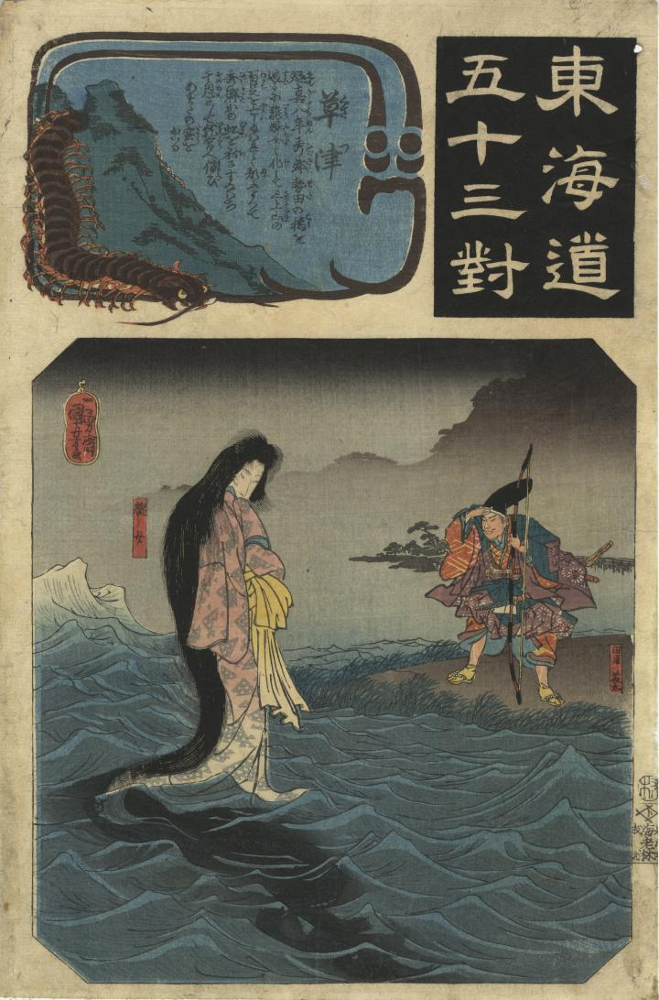

海の上に龍女が現われ、田原藤太と対面している。龍女は、髪が長く、鱗紋の着物を着ている。
著作者：一勇齋國芳／出典：親書誌：U426_nichibunken_0424：草津／日付：2015／資源識別子：U426_nichibunken_0424_0001_0000
Copyright (c)2010- International Research Center for Japanese Studies, Kyoto, Japan. All rights reserved.